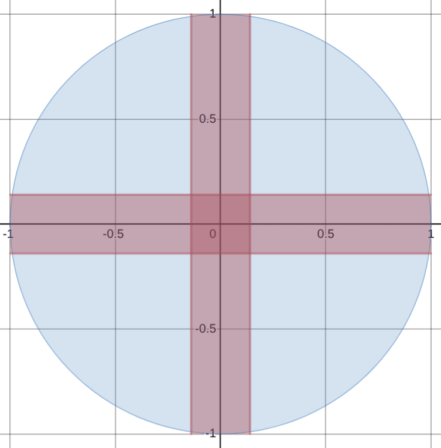
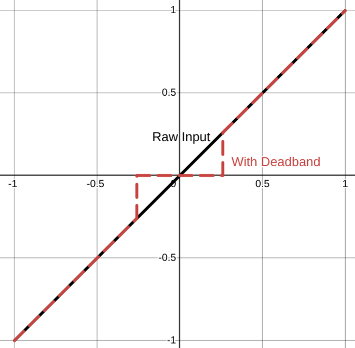
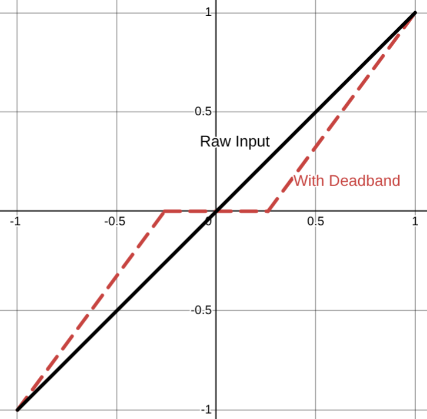
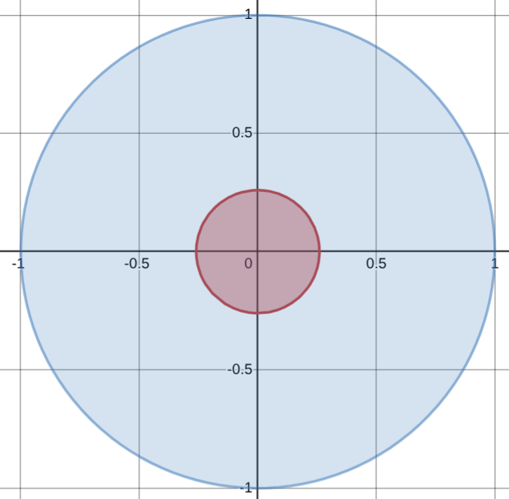
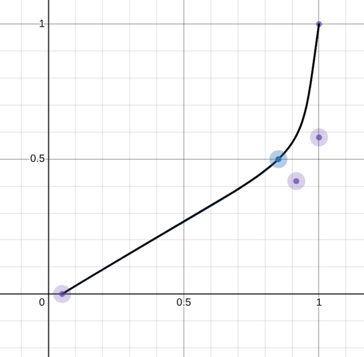

Improving Joystick Control and Precision
Joysticks are a highly effective tool to produce analog inputs. They are incredibly common, finding their way into fighter jet cockpits, video games, and certain notorious deep sea expeditions (the Titan submersible). Their intuitive design make them easy to use and a good choice for many systems.
However, raw inputs from a joystick are noisy and imprecise and are rarely used directly in practice. This article will cover some techniques to improve the level of precision when using joysticks.
Deadbands
Joystick drift refers to the small error in measurement that tends to occur after considerable use of a controller. Drift is present in all controllers after enough use, but is notorious for happening quickly with Nintendo Joycons. A similar error in measurement can appear to occur just by the user holding the joystick slightly off center. Even smaller errors could be created by EMI from the surrounding environment.
The resulting behavior in video games usually looks like the character has a mind of its own and moves without you touching the controller. When driving a robot or car, it would constantly pull toward the side that the controller drifts.
Clearly, this is an undesirable behavior and should be mitigated.
The real challenge is differentiating what is joystick drift and what is human input, then ignoring the appropriate inputs. When using a deadband, the underlying assumption is that user input will never be a small value because any significant action that a user wants to take should require significant changes to the input.
Square Dead Bands
Joystick inputs come in a pair from two encoders in the joystick representing the X and Y axis of the stick. Assume the values are between -1 and 1 representing the joystick being pushed fully in one direction or the other. The simplest solution is to cut away the small values centered around zero. This is easily implemented with an if statement that checks if the absolute value of the input is below a threshold (the deadband).
\[ \text{Let } d \text{ be the value for the deadband.} \\ \text{Then the resulting function representing the deadband is} \\ f(x) = \begin{cases} 0 & \text{if } |x| \leq d \\ x & \text{if } |x| > d \\ \end{cases} \]
Java
import java.lang.Math;
public float applyDeadBand(float x) {
float DEAD_BAND = 0.05;
if (Math.abs(x) < DEAD_BAND) {
return 0.0;
} else {
return x;
}
}Python
def apply_deadband(x: float) -> float:
DEAD_BAND = 0.05
if abs(x) < DEAD_BAND:
return 0.0
else:
return xGraphing a deadband to both the X and Y axis is how it gets the name “square deadband”. The areas in blue are valid points in the input space (where the joystick can be) and the red is areas that are within the deadband.

There is still an issue with this implementation. Now, all of the values within the deadband are invalid outputs, always returned as zero. The user may still want to output a small value and have a deadband to mitigate joystick drift.
Assume the x-axis is the input and the y-axis is the output. Plotting the current implementation will result in the following:

As you can see, there is no way for the user to output values smaller than the deadband. This is not optimal because the use cases for analog input, like a joystick, usually require precision control. For example, in racing games a large steering input is required at low speeds but at high speeds small changes in steering dramatically change the car’s trajectory.
A simple fix is to adjust the output to include the entire range [-1, 1] by passing the input through a simple linear function. The slope is rise (0-1) over run (1 - deadband) and deadband is subtracted/added to x so the x-intercept is when the deadband ends. The resulting function is:
\[ f(x) = \begin{cases} \frac{1}{1 - d} (x + d) & \text{if } x > 0 \\ \frac{1}{1 - d} (x - d) & \text{if } x < 0 \end{cases} \]
Java
import java.lang.Math;
public float applyDeadBand(float x) {
float DEAD_BAND = 0.05;
if (Math.abs(x) < DEAD_BAND) {
return 0.0;
} else if (x < 0) {
return 1.0 / (1.0 - DEAD_BAND) * (x + DEAD_BAND);
} else {
return 1.0 / (1.0 - DEAD_BAND) * (x - DEAD_BAND);
}
}Python
def apply_deadband(x: float) -> float:
DEAD_BAND = 0.05
if abs(x) < DEAD_BAND:
return 0.0
elif x < 0:
return 1.0 / (1.0 - DEAD_BAND) * (x + DEAD_BAND);
else:
return 1.0 / (1.0 - DEAD_BAND) * (x - DEAD_BAND);This makes the deadband function onto (it maps to every possible output) which means that users can now produce small values after moving past the deadband.
Plotting the implementation you can see the function doesn’t have any vertical sections where outputs are skipped.

Circular Deadbands (Polar Coordinates)
You may notice an issue with the square deadband implementation. In the diagonal directions the deadband removes more than in the cardinal directions. This means that the same magnitude of the input (how much the joystick is pushed down) will be clamped to zero depending on the direction it is pointing.
To make the deadband apply evenly no matter which direction the joystick is in, circular deadbands are used. Take the X and Y inputs from the joystick and convert them into a vector. Then, apply the deadband function from above which preserves the entire range of outputs to the magnitude of the vector. Finally, use the angle to get back to X and Y coordinates.
\[ \text{Let } \|v\| = \sqrt{x_{in}^2 + y_{in}^2} \\ \text{Let } \theta = \arctan(\frac{y_{in}}{x_{in}}) \\ \\ f(x) = \begin{cases} \frac{1}{1 - d} (x + d) & \text{if } x > 0 \\ \frac{1}{1 - d} (x - d) & \text{if } x < 0 \end{cases} \\ \\ \text{Let } x_{out} = f(\|v\|) \cdot \cos(\theta) \\ \text{Let } y_{out} = f(\|v\|) \cdot \sin(\theta) \\ \]
Java
public double[] applyDeadBand(double xIn, double yIn) {
float DEAD_BAND = 0.05;
double magnitude = Math.hypot(xIn, yIn);
double theta = Math.atan2(yIn, xIn);
if (Math.abs(x) < DEAD_BAND) {
magnitude = 0.0;
} else if (x < 0) {
magnitude = 1.0 / (1.0 - DEAD_BAND) * (x + DEAD_BAND);
} else {
magnitude = 1.0 / (1.0 - DEAD_BAND) * (x - DEAD_BAND);
}
double xOut = magnitude * Math.cos(theta);
double yOut = magnitude * Math.sin(theta);
return new double[]{xOut, yOut};
}Python
import math
def apply_deadband(x_in, y_in):
DEAD_BAND = 0.05
magnitude = math.sqrt(x_in**2 + y_in**2)
theta = math.atan2(y_in, x_in)
if abs(magnitude) < DEAD_BAND:
magnitude = 0.0
elif x < 0:
magnitude = 1.0 / (1.0 - DEAD_BAND) * (x + DEAD_BAND);
else:
magnitude = 1.0 / (1.0 - DEAD_BAND) * (x - DEAD_BAND);
# Calculate output components
x_out = magnitude * math.cos(theta)
y_out = magnitude * math.sin(theta)
return x_out, y_outPlotting the deadband of the function above results in:

Joystick Mapping
I mentioned in the previous section how when driving at high speeds, only small inputs are required to have large changes in the direction of the car. This is a common problem. Most of the time, the user only needs a small range of outputs and anything else is either insignificant, or too large. Take driving a car, 0-20mph is usually too slow to be of any significance, 20-70mph is where most of your travel will be spent, and 70+mph happens on highways which only need small adjustments in steering.
When using a linear function, including the deadband function we defined above, too little of the input space maps to a useful part of the output space. There needs to be a way to make the majority of inputs result in the majority of useful outputs.
The solution is to apply an activation function to the input of the joystick. The main idea is that we want to add some kind of non-linearity into this system. The fun part is that you can decide how. Instead the simple linear function we implemented early, you can use any function you want after the deadband.
Picking an activation function depends entirely on the system you are trying to control. Some common activation functions I’ve seen used are:
- Quadratic \(x^2\)
- Cubic \(x^3\)
- Quartic \(x^4\)
- Tanh \(\tanh(x)\)
- Exponential \(2^x - 1\)
- Piece-wise Linear Functions
and many more with variations on what constants are used, combining multiple functions together, and higher order polynomials.
Many of these functions have the same goal. Make more of the input map to smaller values in the output. They should all go from -1 to 1 (some need to be piece-wise with one positive and one negative i.e. even degree polynomials). The reasoning behind this is that precise control is easiest at lower speeds, so more of the input space should map to the lower speeds giving greater precision. However, the fast speeds are also needed some times, so near the end of the input space the function ramps up quickly to end at 100%.
Most also have the bonus quality of having a built in deadband in which small input values are made smaller.
My personal experience comes from being the driver/programmer for my high school’s robotics team. During this time, I used Desmos to regress three fifth-order polynomials to fit a cubic bezier curve to create my activation function. This function allocated most of the joystick’s output to less than half the top speed of the robot, but could still reach top speed if needed. It ended up being:
\[ f(x) = \begin{cases} P(x) & \text{if } 0 \leq x \leq 1 \\ -P(|x|) & \text{if } -1 \leq x < 0 \\ \end{cases} \\ \\ \text{where } P(x) = \begin{cases} 0.452515x^5 - 0.619042x^4 + 0.332171x^3 - 0.111379x^2 + 0.585934x - 0.0000825 & 0 < x \leq 0.759808 \\ 1402.36289x^5 - 5750.3564x^4 + 9436.1622x^3 - 7743.9163x^2 + 3178.27035x - 521.5418 & 0.759808 < x \leq 0.935956 \\ 133388.9857x^5 - 658439.6582x^4 + 1298943.527x^3 - 1280124.655x^2 + 630239.1878x - 124006.3873 & 0.935956 < x \leq 1 \end{cases} \]
Java
public float mappingFunction(float x) {
if(x > 0) {
if(x <= 0.759808) {
return
0.452515 * Math.pow(x, 5) +
-0.619042 * Math.pow(x, 4) +
0.332171 * Math.pow(x, 3) +
-0.111379 * Math.pow(x, 2) +
0.585934 * x +
-0.0000825337;
} else if(x <= 0.935956) {
return
1402.36289 * Math.pow(x, 5) +
-5750.3564 * Math.pow(x, 4) +
9436.1622 * Math.pow(x, 3) +
-7743.9163 * Math.pow(x, 2) +
3178.27035 * x +
-521.5418;
} else if(x <= 1) {
return
133388.9857 * Math.pow(x, 5) +
-658439.6582 * Math.pow(x, 4) +
1298943.527 * Math.pow(x, 3) +
-1280124.655 * Math.pow(x, 2) +
630239.1878 * x +
-124006.3873;
} else {
return 0;
}
} else {
x = Math.abs(x);
if(x <= 0.759808) {
return -1 * (
0.452515 * Math.pow(x, 5) +
-0.619042 * Math.pow(x, 4) +
0.332171 * Math.pow(x, 3) +
-0.111379 * Math.pow(x, 2) +
0.585934 * x +
-0.0000825337);
} else if(x <= 0.935956) {
return -1 * (
1402.36289 * Math.pow(x, 5) +
-5750.3564 * Math.pow(x, 4) +
9436.1622 * Math.pow(x, 3) +
-7743.9163 * Math.pow(x, 2) +
3178.27035 * x +
-521.5418);
} else if(x <= 1) {
return -1 * (
133388.9857 * Math.pow(x, 5) +
-658439.6582 * Math.pow(x, 4) +
1298943.527 * Math.pow(x, 3) +
-1280124.655 * Math.pow(x, 2) +
630239.1878 * x +
-124006.3873);
} else {
return 0;
}
}
In retrospect, it would have been much more effective to approximate this function using two or three linear functions. It would have been simpler to understand the easier to compute. I got carried away with what I could do and never stopped to ask if I should do it.
Learn from my mistakes, a simple polynomial function usually does the job just fine.
Next Steps
The world is a noisy place. Human inputs can be very noisy and erratic. Additionally, the system being controlled may be affected by noise from the environment. In either scenario, to resulting behavior will look like jittery outputs and vibration.
Generally speaking, these jittery erratic movements will degrade mechanical parts faster. If the system is controlled with motors, this will also shorten the lifespan of the motors.
Adding a controller to the system will help remove noise from the system. Similar to picking a joystick mapping function, picking the correct controller depends on the specific system you are using. Some common techniques are:
- Feed-foward
- Feed-back
- Trapezoidal motion profiles
- PID controllers
Of course, the best solution is to automate as much as you can. Machines are precise, humans are not. Either way, you are now much better equipped to handle analog user inputs with a high level of precision.